Charlottenburg · Intérieur, micro-living, mai 2026
Modern Berlin Micro-Living Apartment

Le contexte. Un studio de 34,46 m² dans un immeuble résidentiel modernisé de Charlottenburg, à deux pas du Landwehrkanal, de la Spree et de la TU Berlin. Le client, Jonas Keller, étudiant en architecture, en a fait son espace pour vivre, travailler et créer. L'entrée se fait directement dans la pièce principale, sans couloir ni sas tampon, ce qui pose d'emblée la question de la lecture des usages.
L'intention. Une direction artistique « Warm Minimal » : matières naturelles, tons clairs, lignes nettes. L'objectif n'est pas une transformation structurelle, les murs périphériques sont porteurs et ne peuvent pas être touchés, mais une relecture spatiale : fluidifier les usages et améliorer la perception de l'espace dans une surface contrainte.
La stratégie. Optimiser chaque mètre carré disponible, multiplier le mobilier sur-mesure discret et les rangements intégrés, clarifier trois zones dans un même volume : vie, travail, repos. La pièce principale de 23,34 m² concentre ces usages, tandis que la cuisine de 4,16 m², le couloir de 2,03 m² et la salle de bain de 4,93 m² restent des espaces de service bien identifiés. Les deux fenêtres de la pièce principale, orientées nord-est, offrent une belle lumière de matin qu'il faut diffuser avec soin vers les zones les plus reculées, couloir et cuisine.
Le résultat. Une rénovation portée sur l'optimisation de la surface, le mobilier sur-mesure, la reprise des sols et des peintures, et le travail de la lumière artificielle, plutôt que sur le gros œuvre. Un studio qui gagne en fluidité d'usage sans gagner un mètre carré supplémentaire.
Le plan
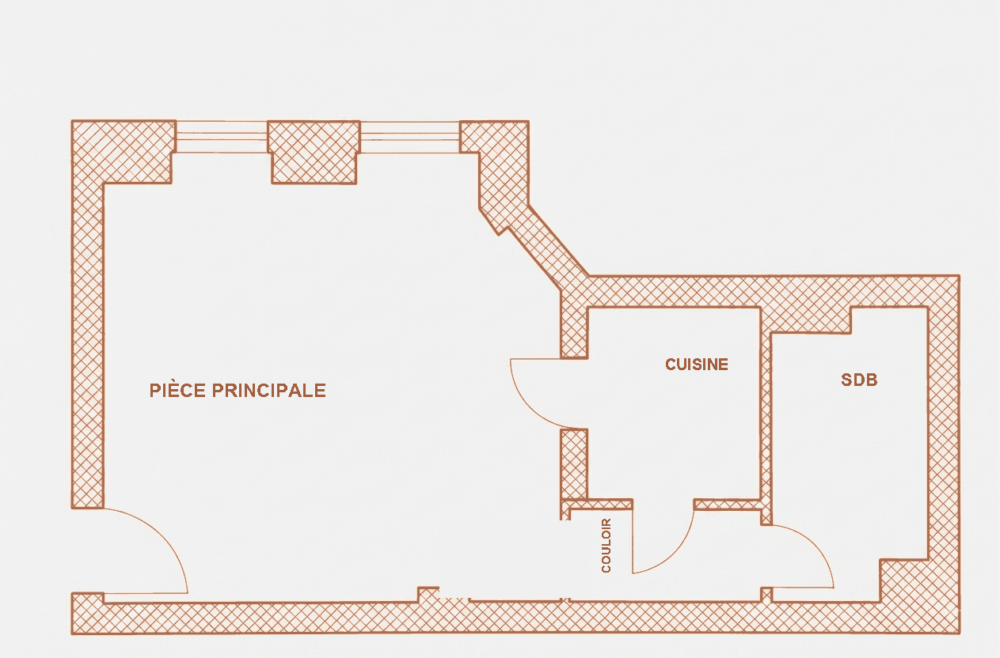
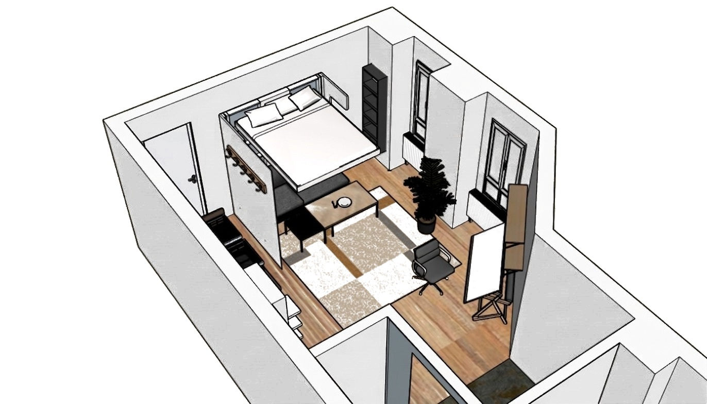
Moodboard
Les références qui ont guidé l'ambiance : lin naturel, cuir cognac, système lit-bureau modulable et chêne huilé.
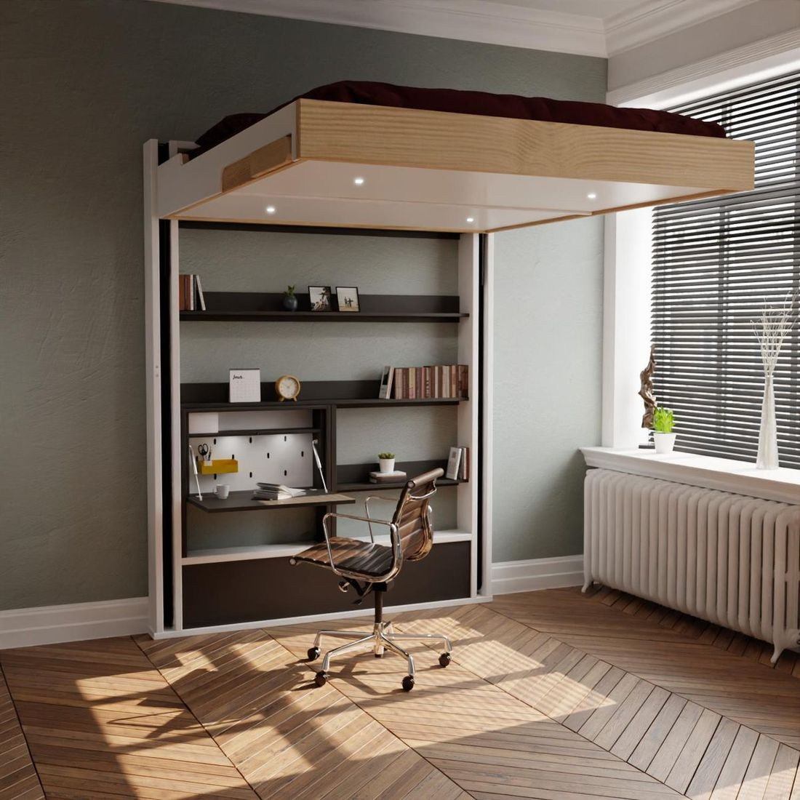
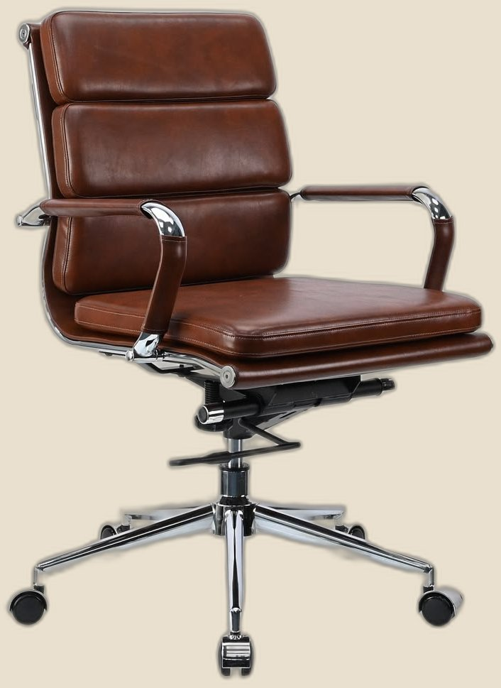
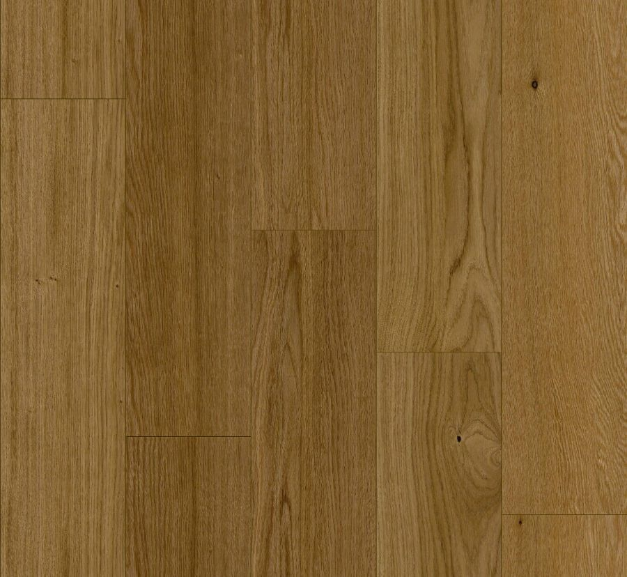
Une palette Warm Minimal directement relevée sur le rendu du studio : le gris chaud des murs, le bois du parquet, les deux tons du tapis et les touches plus sombres du canapé et de la plante.
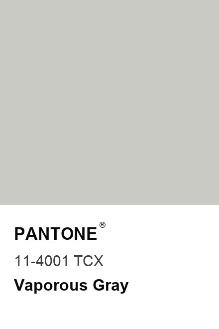
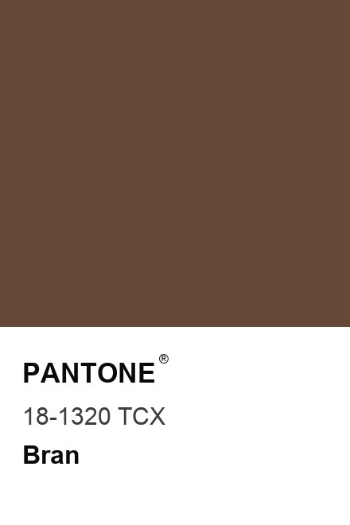
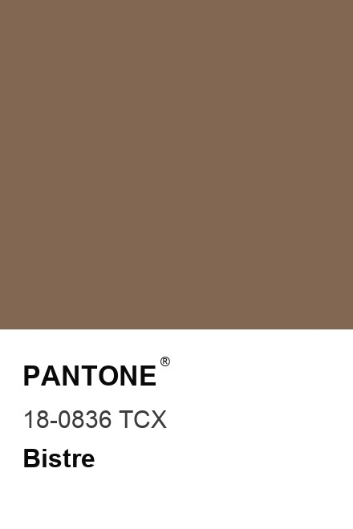
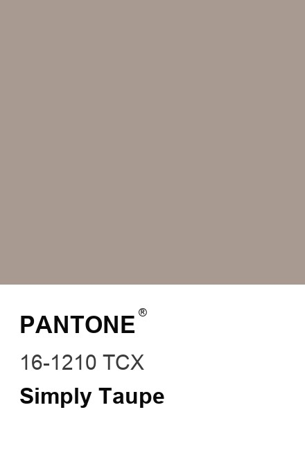
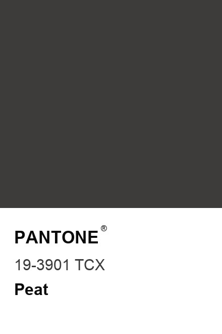
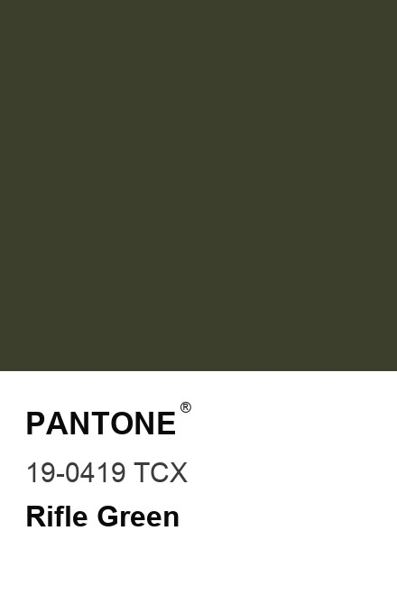
Le lit escamotable Juno
Sur 23,34 m², la pièce principale devait tenir trois usages sans jamais en sacrifier un seul. Un lit fixe aurait condamné le salon la journée, j'ai donc choisi le lit escamotable Juno : encastré dans un caisson mural sur-mesure, il pivote à la verticale sur charnière basse, assisté par des vérins à gaz, et libère jusqu'à 4 m² au sol en un geste, révélant le canapé intégré sans qu'il faille en retirer les coussins. Le soir, il redescend silencieusement à 42 cm du sol pour un couchage digne d'un lit traditionnel. C'est ce mécanisme, plus que le mètre carré gagné, qui fait tenir le studio.
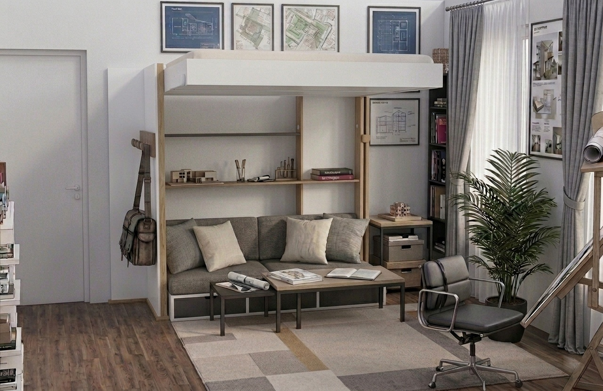
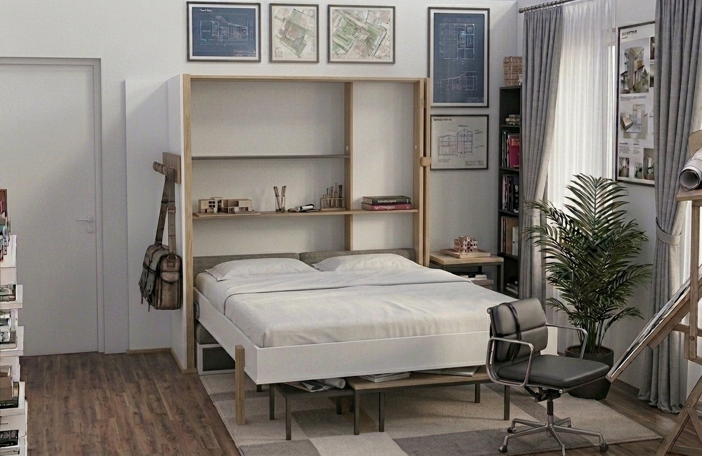
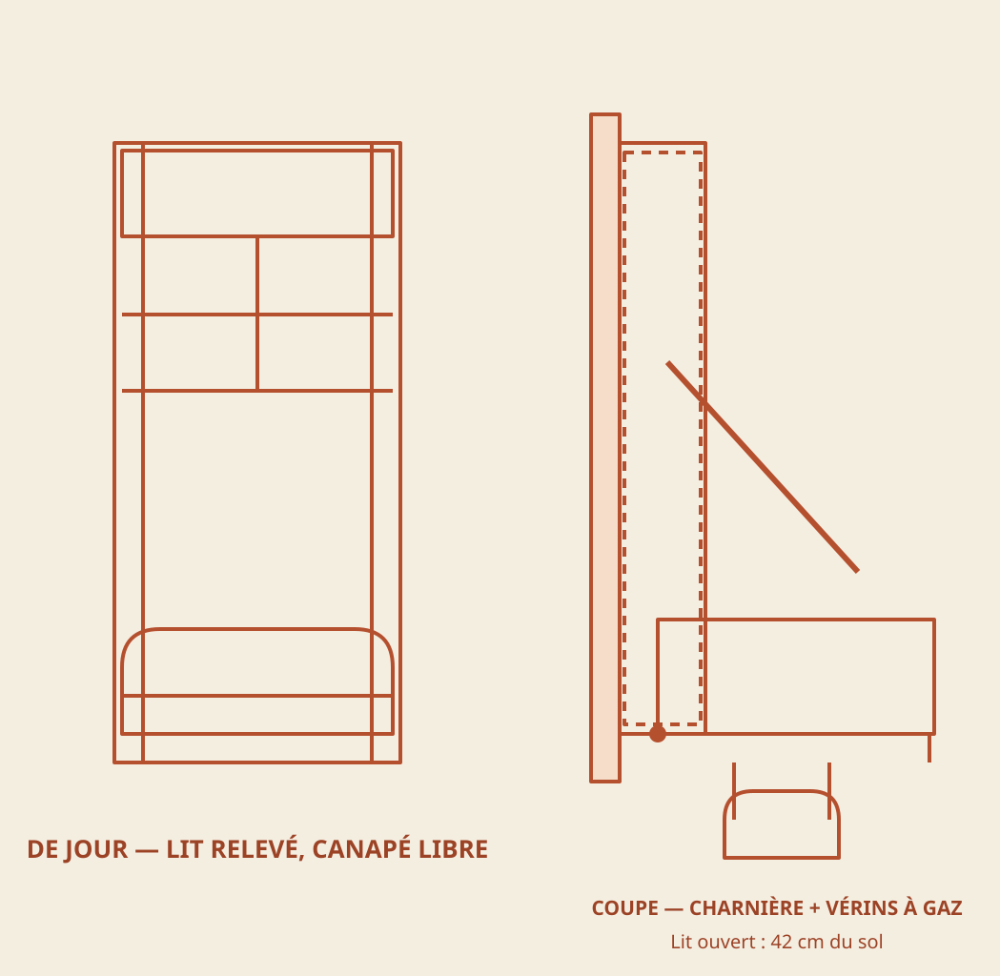
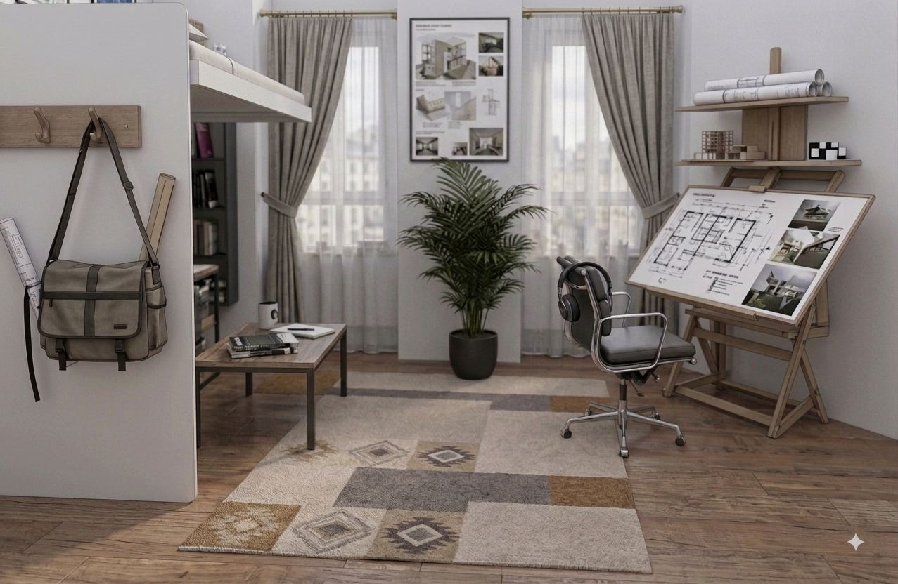